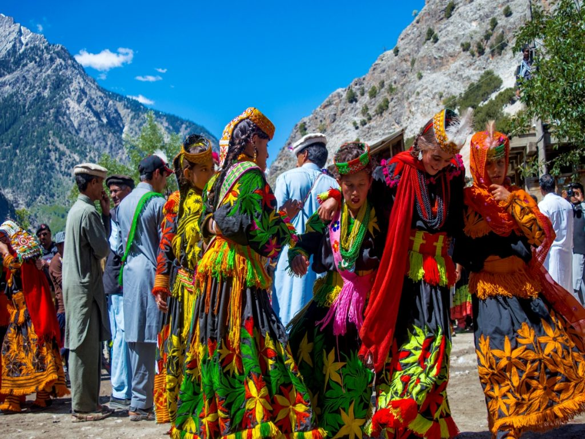

ISB landing → Chitral → Kalash valleys for celebration days → ethical hosting → fly/drive out — timed to the festival calendar, not a rushed photo stop.
8 days / 7 nightsCulture · SeasonalChitral · Kalash
StyleJeeps, valley guesthouses, local Kalash/Chitral hosts
Best windowAlign to Joshi (spring) or other festival dates — confirmed yearly

Festival dance days — Days 3–4Mountain approach roads
Day-by-day — landing to takeoff
Day 1
Land ISB · Fly/drive to Chitral
Meals: — / L* / DOvernight: Chitral
Landing: Meet at Islamabad International (ISB); transfer to domestic terminal or road-start hotel if overlanding.
Preferred: Flight ISB → Chitral (CJL) when operating; driver meets at CJL.
Alternate: Overland via Lowari Tunnel corridor (long day — early start, packed lunch, evening Chitral arrival).
Evening: Chitral hotel check-in; festival & valley etiquette briefing (dress, photography consent, alcohol/sacred-space rules); welcome dinner.
Day 2
Chitral morning · Jeep into Kalash valleys
Meals: B / L / DOvernight: Bumburet (or festival valley)
Morning: Optional Chitral Fort / bazaar hour if time before jeep departure.
Transfer: 4x4 into Kalash valleys (typically Bumburet — 3–5 hrs depending on road and festival location).
Afternoon: Guesthouse check-in; orientation walk with local host; meet family/community contacts where arranged.
Evening: Quiet night — rest before festival intensity; confirm tomorrow’s dance-ground timing.
Day 3
Festival day 1 — celebration & music
Meals: B / L / DOvernight: Kalash valley
Morning: Host-led placement at festival grounds; watch dances and music from visitor-appropriate areas.
Photography: Ask before every portrait; no flash in sensitive moments; follow host signals to put cameras down.
Afternoon: Break for lunch; return for afternoon celebration blocks or village lanes between events.
Evening: Early dinner; debrief with host on Day 4 schedule (festivals shift hour-by-hour).
Day 4
Festival day 2 — deeper valley time
Meals: B / L / DOvernight: Kalash valley
Morning: Second celebration window or smaller village ceremony depending on the year’s programme.
Afternoon: Walk between hamlets; walnut groves; craft conversations; optional visit to a second Kalash valley (Rumbur/Birir) if roads and energy allow.
Evening: Shared meal; space for guests who want quiet after loud festival hours.
Day 5
Post-festival valley depth
Meals: B / L / DOvernight: Kalash valley
Day: Slow cultural day without festival crowds — household visits (by invitation), trails, storytelling, photography of landscape and architecture.
Purpose: See Kalash life beyond the celebration peak; supports community stays ethically.
Day 6
Return to Chitral · Buffer night
Meals: B / L / DOvernight: Chitral
Morning: Jeep out of the valleys to Chitral town.
Afternoon: Hot showers, laundry if needed, riverside walk or museum time.